From the messy sink to a loaded dishwasher. A wheeled robot docks at the kitchen counter, GPT recognises what to load, and a Franka arm loads the countertop dishwasher.
MuJoCo physics simulation + real-hardware design. Not yet a physical robot.Demo video with bilingual captions. Everything shown is MuJoCo simulation; slow parts are sped up (the speed is shown on screen).
Loading the dishwasher needs bending, reaching and careful hands, every single day. For older people, carers and busy families in compact kitchens, it is one more chore that never ends. A countertop dishwasher already does the washing. We automate the part that is left: putting things in and pressing start, with an unmodified appliance in an unmodified kitchen.
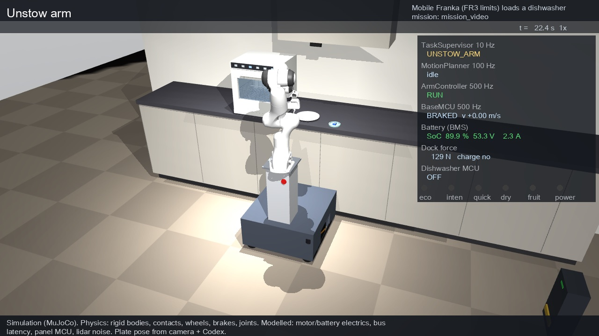
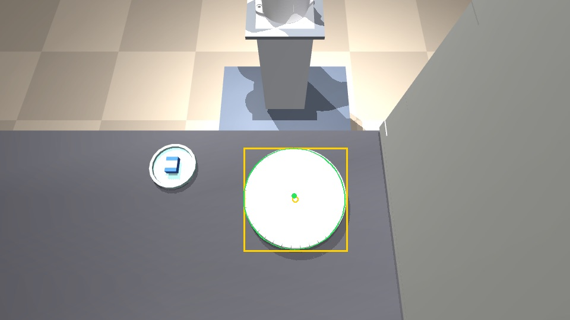
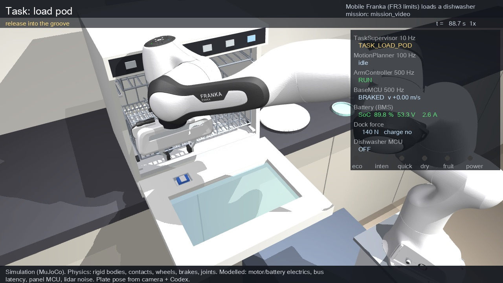
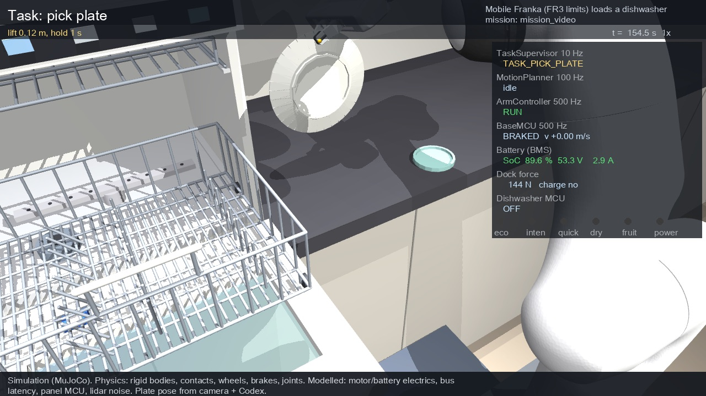
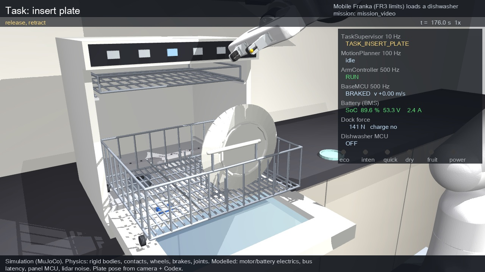
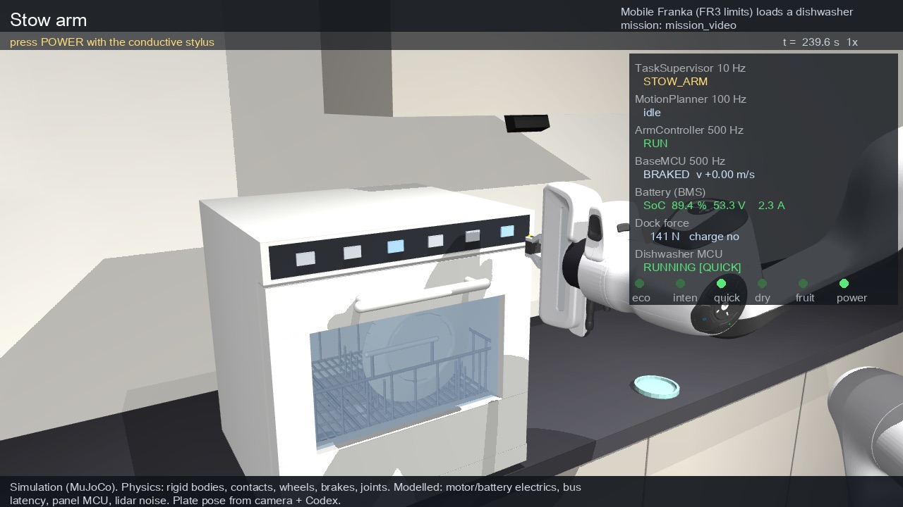
Final run: GPT looks 5 times (22–38 s each). The arm loads all 5 dishes from their perceived poses (1.45–2.7 mm), pushes the basket in, closes the door (−0.009°, sensor closed) and presses QUICK, then POWER: the panel shows RUNNING (QUICK). That layout has no flat plate and no upright bowl. (multi_dish_b/result_sink_full.json)
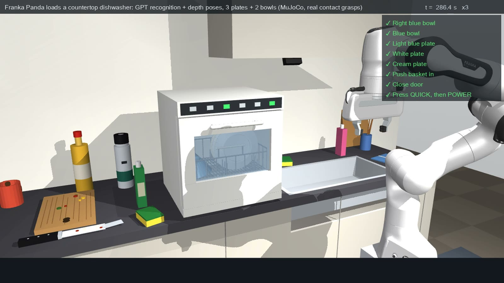
A harder layout. Six dishes are dropped into a sink. GPT looks (one call, 59 s), finds all 6 among 13 items and plans a pick order. The arm grasps each dish from its perceived pose (GPT box + depth, 1.7–2.9 mm error), then GPT looks again: 4 of 6 dishes loaded. An upright bowl sitting on a plate and a plate lying flat on the basin floor are handed to a person. (multi_dish_b/DEMO_NOTES.md)
The same pipeline on a tidy counter:
One live GPT call looks at a cluttered counter (3 plates, 2 bowls and 8 everyday items) and labels every item: what goes into the dishwasher, where, and why the rest stays out. Depth inside GPT's boxes gives each dish's pose, and the arm loads all five from those perceived poses. The clutter is left untouched.
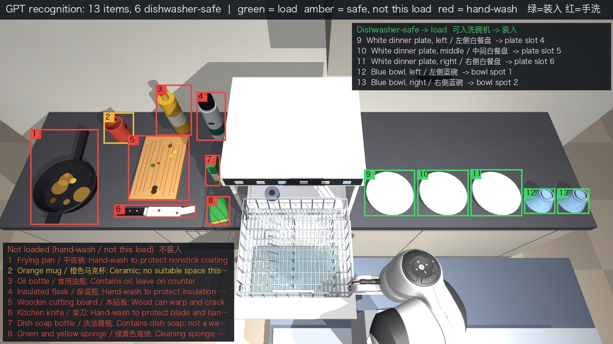
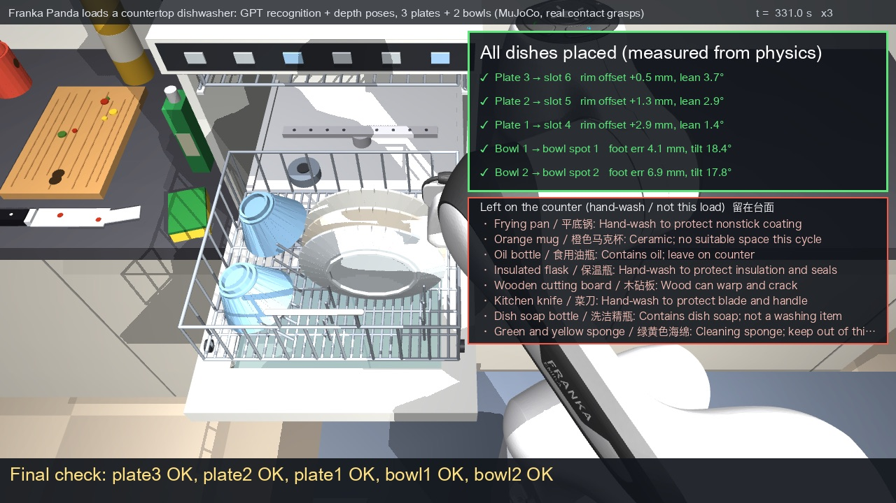
| Gripper (Franka Hand) | Suction (Franka Cobot Pump) | |
|---|---|---|
| Start | 3 plates + 2 bowls side by side, 8 clutter items | 2 nested bowls + 3 stacked plates, 8 clutter items |
| Poses used | perceived (GPT box + depth) | perceived (GPT box + depth) |
| Placed | 5/5 | 5/5, 0 seal losses |
| Clutter moved | ≤ 0.85 mm | ≤ 0.85 mm, 0 contacts |
Sources: multi_dish_b/DEMO_NOTES.md (kitchen section), multi_dish_suction/DEMO_NOTES.md. Across 24 random counters in a separate study, GPT classified 164/164 items (gpt_sort/GPT_SORT.md). Honest notes: one clean rendered image; the door starts open with the basket out.
GPT (through codex exec on a ChatGPT subscription) chooses and sequences validated skills, reads their results and decides how to recover. The robot API checks every call against a schema, a safety gate and preconditions. Force control, trajectories and the e-stop never depend on GPT.
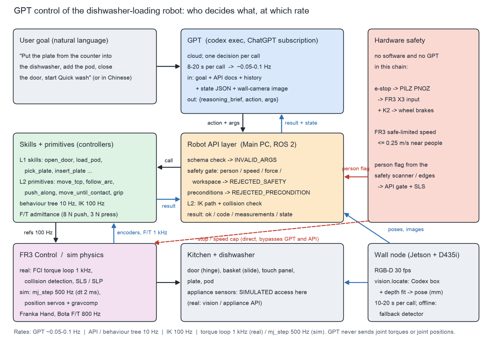
| Injected fault | Script | GPT |
|---|---|---|
| Door does not latch (springs back to ~68°) | 0/2 | 2/2 |
| Pod not in its dish | 0/2 | 2/2 |
| Plate at a random spot | 0/2 | 2/2 |
| Basket jams at 0.10 m | 0/2 | 2/2 |
| First button press ignored | 0/2 | 1/2 |
| Plate knocked out of the hand | 0/2 | 2/2 |
| Person near the robot | 0/2 | 2/2 |
| Missions completed | 0/14 | 13/14 |
Source: gpt_control/GPT_CONTROL.md §1.1. About 11 GPT calls per nominal mission, median 9.5 s each. GPT composing raw motion primitives finished 0 of 3 missions, which is why it works at the skill level.
Follow-up studies: GPT commanded the whole mobile mission 3/3 (gpt_mobile); as a tester GPT found 9 failure modes including the 4 most severe (gpt_adversary); as an engineer it fixed the plate lean from 9.7° to 2.1° with a one-line patch (gpt_engineer).
Franka FR3 arm with a wrist force sensor on a differential-drive base: 51.2 V 30 Ah LFP battery, an inverter for the arm controller, a real-time main PC, an STM32 base MCU, a Jetson wall camera node, and a hardware e-stop chain that bypasses all software.
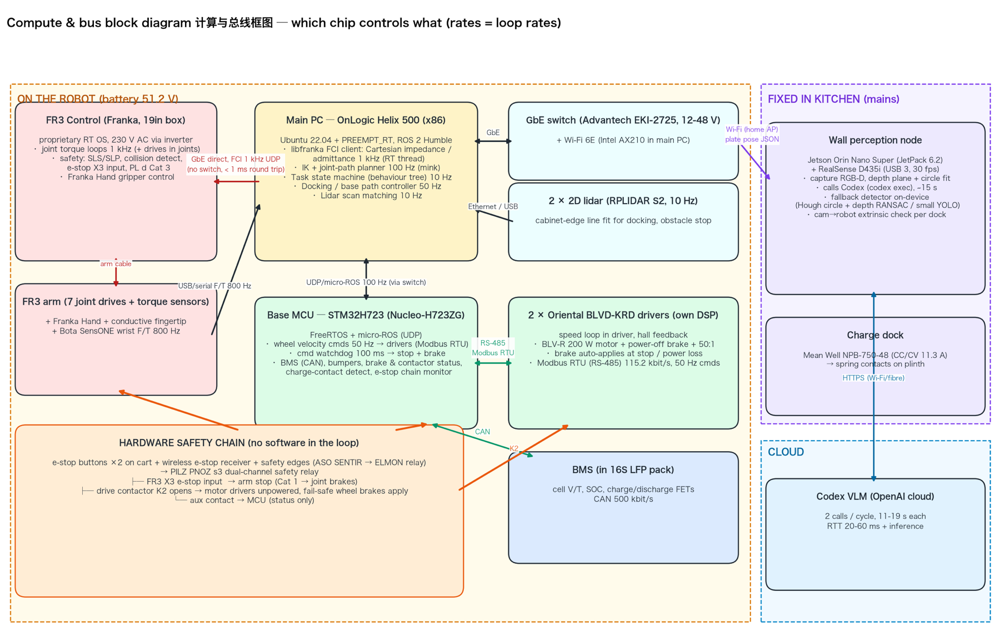
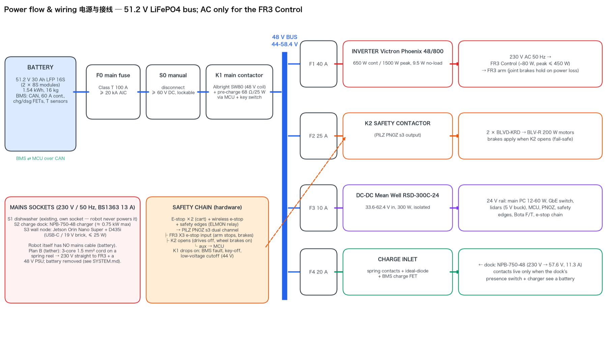
| BOM group | USD |
|---|---|
| Arm: Franka FR3 + Hand + Bota SensONE F/T + conductive fingertip | 36,450 |
| Drive & structure: 2 braked BLDC drives, wheels, casters, chassis, ballast, V-blocks | 5,096 |
| Power: battery, inverter, DC-DC, contactors, fuses, charger, charge contacts | 2,490 |
| Sensors & wall node: 2 lidars, Jetson Orin Nano Super, RealSense D435i | 1,799 |
| Compute: main PC, STM32 MCU board, Wi-Fi, switch | 1,340 |
| Safety: PILZ relay, e-stops, wireless e-stop, safety edges | 1,260 |
| Total incl. 10 % contingency | 53,279 (≈ S$ 69,263) |
Source: system_design/bom_table.md (28 lines; prices are reseller listings or estimates, not quotes).
Real: MuJoCo physics (wheels, brakes, contacts, plate, pod, door, basket), real GPT calls with real latency, and a costed hardware design.
Not yet: a physical robot; the 5-dish kitchen runs start with the door open. Water, washing, the door latch and real capacitive touch are not simulated. Ten trials, six missions and two runs per fault show feasibility, not reliability.
Next: one run from the charger to a full load, destack piles robustly, test a conductive fingertip on the real E804 panel, then supervised trials in a real kitchen.